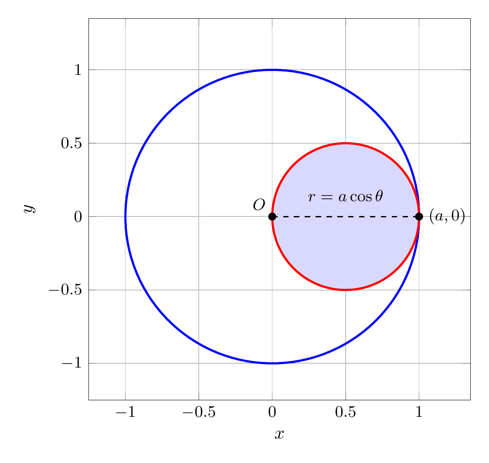
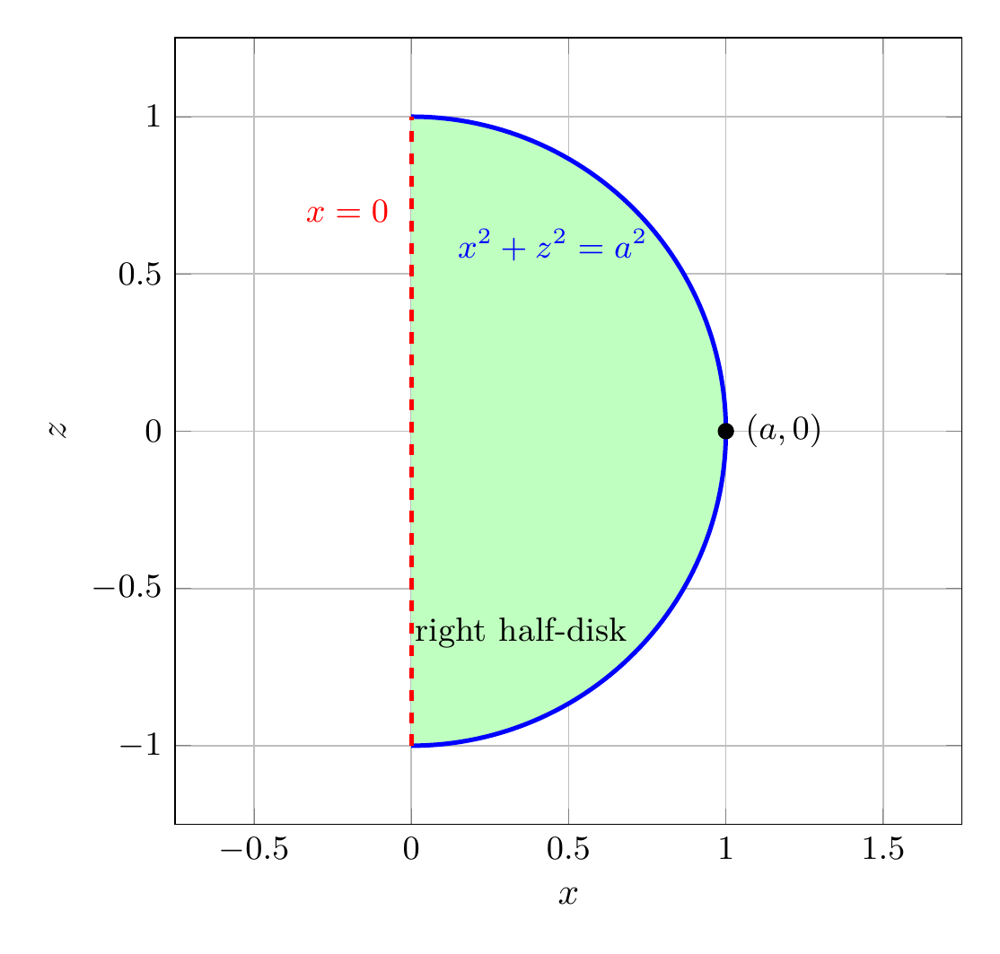

Please solve the problem in the following image.
(Image `20260928_150513_163255_utc_0800_0.png`. Alt text: Image: human_20260928_150513_163255_utc_0800)
20260928_150513_163255_utc_0800_0.png
End of problem
Answer
## Solution
### (a) Volume in cylindrical coordinates
Use cylindrical coordinates
$$
x=r\cos\theta,\qquad y=r\sin\theta,\qquad z=z,\qquad dV=r\,dz\,dr\,d\theta.
$$
**The cylinder.**
The cylinder is
$$
r=a\cos\theta
\iff r^2=ar\cos\theta
\iff x^2+y^2=ax
\iff \left(x-\frac a2\right)^2+y^2=\left(\frac a2\right)^2.
$$
It is a circular cylinder of radius $a/2$ whose axis is the line $x=a/2,\ y=0$ (parallel to the $z$-axis). Since $r\ge 0$, we must have $\cos\theta\ge 0$, so the cylinder is described by
$$
-\frac\pi2\le \theta\le \frac\pi2.
$$
**The sphere.**
The sphere of radius $a$ centered at the origin is
$$
x^2+y^2+z^2=a^2
\iff r^2+z^2=a^2.
$$
The solid cut out of the sphere by the cylinder is the set of points lying inside both surfaces.
### Projection onto the $xy$-plane
For each direction $\theta$, the cylinder gives $0\le r\le a\cos\theta$. The projection region is therefore the cylinder disk
$$
D:\quad -\frac\pi2\le\theta\le \frac\pi2,\qquad 0\le r\le a\cos\theta.
$$
For a fixed $(r,\theta)\in D$, the sphere gives
$$
z^2\le a^2-r^2
\qquad\Longrightarrow\qquad
-\sqrt{a^2-r^2}\le z\le \sqrt{a^2-r^2}.
$$
---
pgfplots_0.png
---
### Top view: the projection disk $D$
The projection of the solid onto the $xy$-plane is exactly the disk inside the cylinder, because the cylinder disk lies entirely inside the sphere projection $x^2+y^2\le a^2$ (its farthest point from the origin is $(a,0)$).
---
\documentclass[border=10pt]{standalone}
\usepackage{pgfplots}
\pgfplotsset{compat=1.18}
\begin{document}
\begin{tikzpicture}
\begin{axis}[
axis equal,
xmin=-1.25, xmax=1.35,
ymin=-1.25, ymax=1.35,
xlabel=$x$, ylabel=$y$,
width=9cm, height=9cm,
grid=major,
tick label style={font=\small},
]
% Shade the projection D = cylinder disk
\addplot[fill=blue!15, draw=none, domain=-90:90, samples=120]
({cos(x)^2}, {cos(x)*sin(x)}) -- cycle;
% Sphere projection circle
\addplot[blue, very thick, domain=0:360, samples=120]
({cos(x)}, {sin(x)});
% Cylinder circle
\addplot[red, very thick, domain=0:360, samples=120]
({0.5+0.5*cos(x)}, {0.5*sin(x)});
% Radial segment from O to (a,0)
\addplot[black, dashed, thick, domain=0:1, samples=2] ({x}, {0});
% Points O and (a,0)
\addplot[only marks, mark=*, mark size=2pt, color=black] coordinates {(0,0) (1,0)};
\node[anchor=south, font=\small] at (axis cs:0.5,0.06) {$r=a\cos\theta$};
\node[anchor=west, font=\small] at (axis cs:1+0.02,0) {$(a,0)$};
\node[anchor=south east, font=\small] at (axis cs:0,0) {$O$};
\end{axis}
\end{tikzpicture}
\end{document}

pgfplots_1.png
---
### Side view: cross-section by the plane $y=0$
At $y=0$, the cylinder condition becomes $0\le x\le a$, while the sphere gives $z^2\le a^2-x^2$. Thus the cross-section is the right half-disk
$$
0\le x\le a,\qquad -\sqrt{a^2-x^2}\le z\le \sqrt{a^2-x^2}.
$$
This verifies the $z$-limits used in the integral.
---
\documentclass[border=10pt]{standalone}
\usepackage{pgfplots}
\pgfplotsset{compat=1.18}
\begin{document}
\begin{tikzpicture}
\begin{axis}[
axis equal,
xmin=-0.35, xmax=1.35,
ymin=-1.25, ymax=1.25,
xlabel=$x$, ylabel=$z$,
width=9cm, height=9cm,
grid=major,
tick label style={font=\small},
]
% Shade the right half-disk cross-section
\addplot[fill=green!25, draw=none, domain=-90:90, samples=120]
({cos(x)}, {sin(x)}) -- cycle;
% Sphere arc x^2+z^2=1, x>=0
\addplot[blue, very thick, domain=-90:90, samples=120]
({cos(x)}, {sin(x)});
% Cylinder boundary x=0
\addplot[red, very thick, dashed] coordinates {(0,-1) (0,1)};
% Point (a,0)
\addplot[only marks, mark=*, mark size=2pt, color=black] coordinates {(1,0)};
\node[anchor=west, font=\small] at (axis cs:1.02,0) {$(a,0)$};
\node[anchor=east, font=\small, color=red] at (axis cs:-0.03,0.7) {$x=0$};
\node[anchor=south, font=\small, color=blue] at (axis cs:0.45,0.5) {$x^2+z^2=a^2$};
\node[anchor=north, font=\small] at (axis cs:0.35,-0.55) {right half-disk};
\end{axis}
\end{tikzpicture}
\end{document}

pgfplots_2.png
---
### Volume integral
Using the $z$-limits above, the volume is
$$
V=\int_{-\pi/2}^{\pi/2}\int_{0}^{a\cos\theta}
\int_{-\sqrt{a^2-r^2}}^{\sqrt{a^2-r^2}}
r\,dz\,dr\,d\theta
=\int_{-\pi/2}^{\pi/2}\int_{0}^{a\cos\theta}
2r\sqrt{a^2-r^2}\,dr\,d\theta.
$$
Evaluate the inner integral:
$$
\int_0^{a\cos\theta}2r\sqrt{a^2-r^2}\,dr
=\left[-\frac23(a^2-r^2)^{3/2}\right]_0^{a\cos\theta}
=\frac{2a^3}{3}\left(1-|\sin\theta|^3\right).
$$
Therefore
$$
V=\frac{2a^3}{3}\left[\int_{-\pi/2}^{\pi/2}1\,d\theta
-\int_{-\pi/2}^{\pi/2}|\sin\theta|^3\,d\theta\right]
=\frac{2a^3}{3}\left(\pi-2\int_0^{\pi/2}\sin^3\theta\,d\theta\right).
$$
Now
$$
\int_0^{\pi/2}\sin^3\theta\,d\theta
=\int_0^1(1-u^2)\,du
=\frac23,
\qquad u=\cos\theta.
$$
Hence
$$
V=\frac{2a^3}{3}\left(\pi-\frac43\right)
=\frac{2\pi a^3}{3}-\frac{8a^3}{9}
=\frac{6\pi-8}{9}a^3.
$$
### (b) Illustration
The plots above show the sphere and the cylinder on the same screen. The solid is the common region inside both surfaces. The intersection curves are the curves where the cylinder meets the sphere:
$$
r=a\cos\theta,\qquad z=\pm a|\sin\theta|,\qquad -\frac\pi2\le\theta\le\frac\pi2.
$$
### Final answer
$$
\boxed{V=\frac{2a^3}{3}\left(\pi-\frac43\right)=\frac{6\pi-8}{9}a^3}
$$
For example, when $a=1$, $V\approx1.2056$, while the whole sphere has volume $4\pi/3\approx4.1888$.